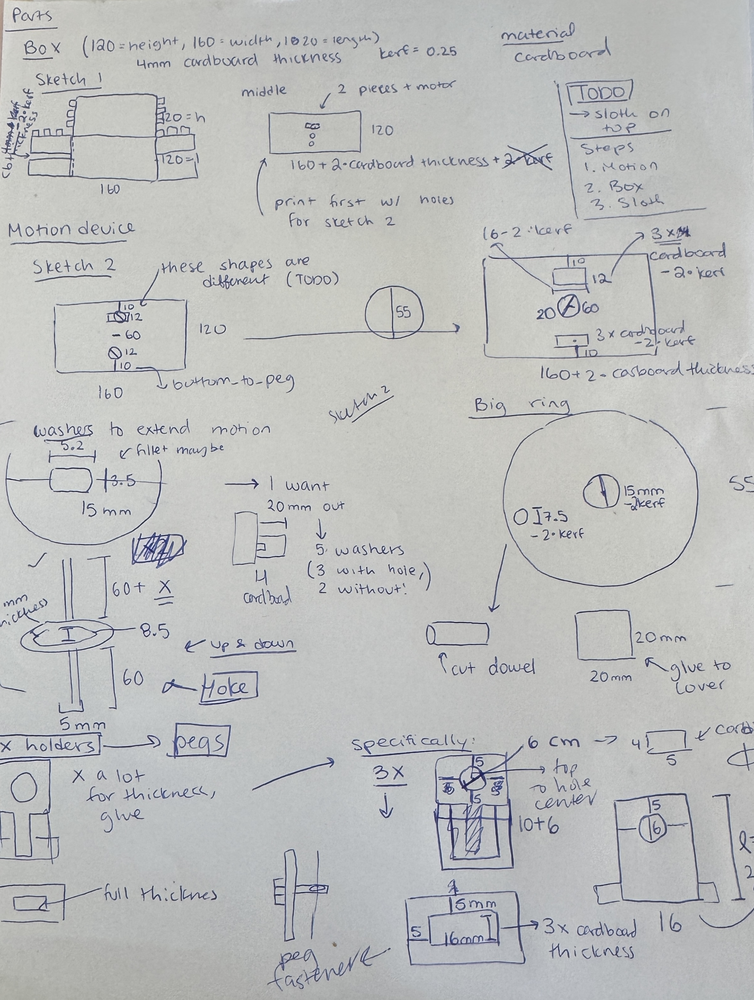
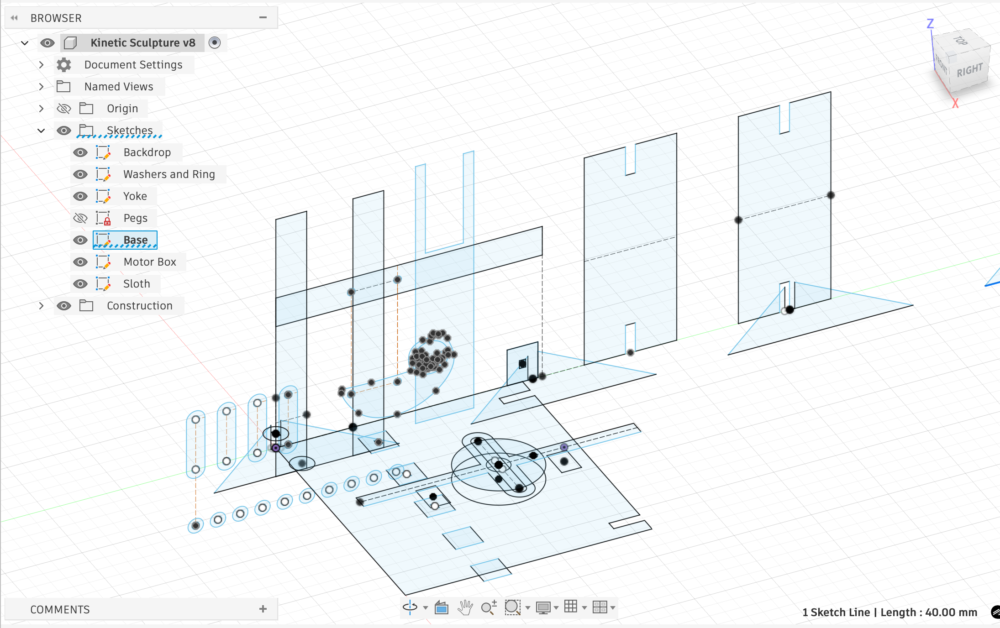
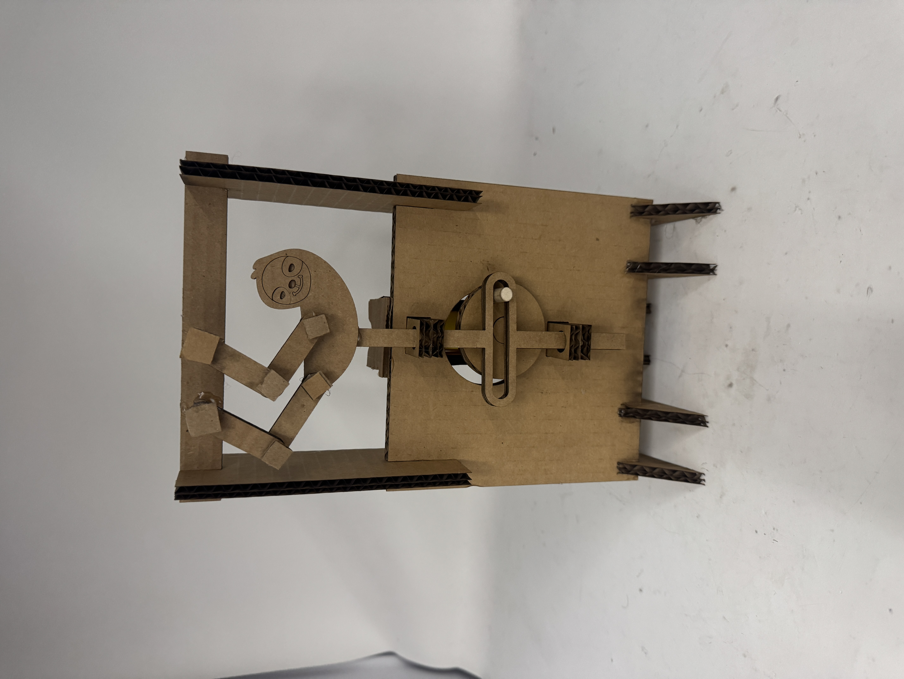
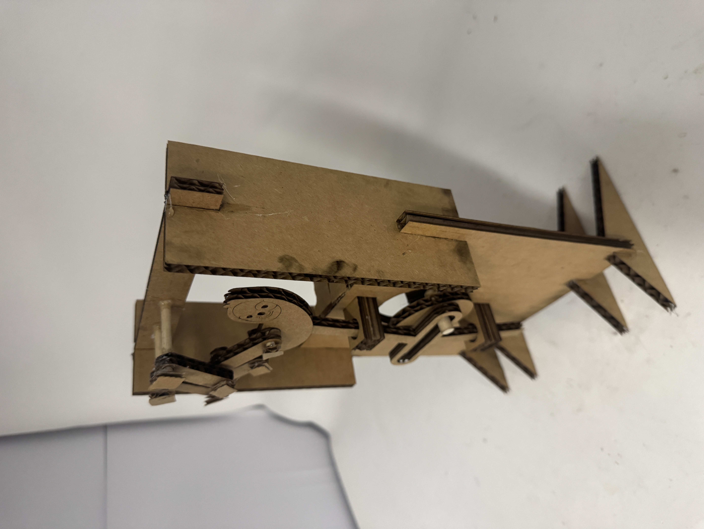
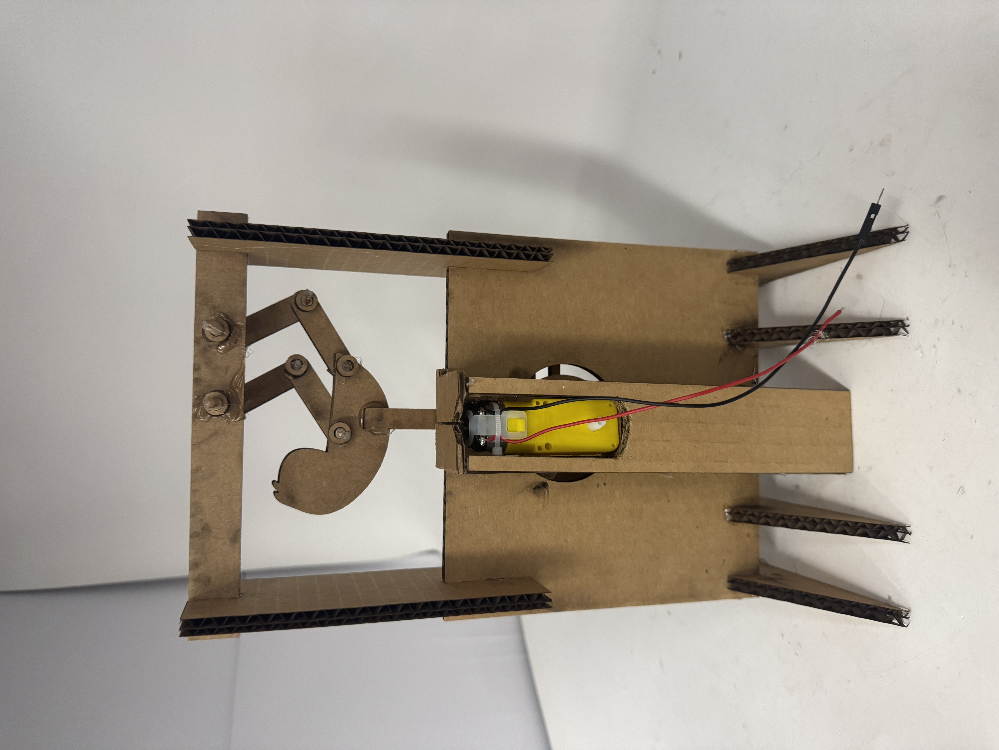

<div class="textcontainer">
<p class="margin"> </p>
<h3>Week 3: Hand Tools and Fabrication</h3>
<p class="margin"> </p>
<div class="flexrow">
<a id="btn" href="./kinetic_sculpture.f3d" download>Download the CAD File!
</a>
</div>
<p class="margin"> </p>
<h4>Kinetic Sculpture</h4>
For my kinetic scultpure, I made a sloth curling up onto a branch. For the sloth to curl,
I added joints on the sloth's limbs using a dowel, cardboard and hot glue. Then I used the up
and down motion of a scotch yoke for the motion. The reason I used a scotch yoke was because
it allows the sloth to hang onto the branch at the top for a while (because there is no up
and down motion as the peg moves horizontally on the wheel).
First, I began with a drawing of all the parts that I thoughts I would need.
I did this by using the scotch yoke design from lab and noticing what is most important in ensuring smooth
motion– it was important that all the pegs and wheel were very fixed in place and that the
yoke didn't have friction. <br>
 <br>
Then I created a CAD of these designs. As I began laser cutting, I made some adjustments regarding kerf and size of the objects.
I learned that accounting for kerf too much actually makes it very hard to fit the parts
together. In my final design, I made kerf = 0 and hot glued which improved the fit.

The most difficult part of putting it all together once I had solified the laser cut shape
was setting the motor up on the motor box. Since for the scotch yoke it's very important
that the wheel stays in the same place, using cardboard to attach to the wheel/motor
and not attaching the motor box to the design (placing it inside the box), lead to some
weird spinning. Here is my final design.
<div style="display: flex; align-items: center; gap: 15px; flex-wrap: wrap;">



<video controls style="width: 40%; flex-shrink: 0; max-width: 400px;">
<source src="./sloth.mp4" type="video/mp4">
Your browser does not support the video tag. <a href="./sloth.mp4">Download the video</a> instead.
</video>
</div>
<br>
<br>
You can see in the video that I am manually holding the motor box still, in addition
to having it in a super tight box that holds it in place. Next week, I plan to create
this design in wood/attach the motor to the wheel in a tighter way. I also hope to
figure out a more secure way to hold the motor box.
</div>